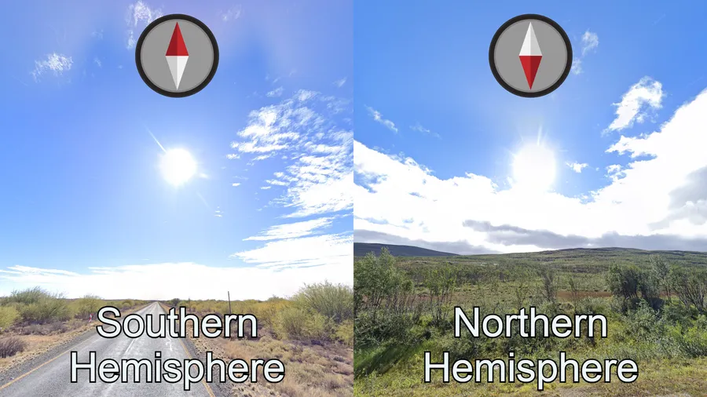
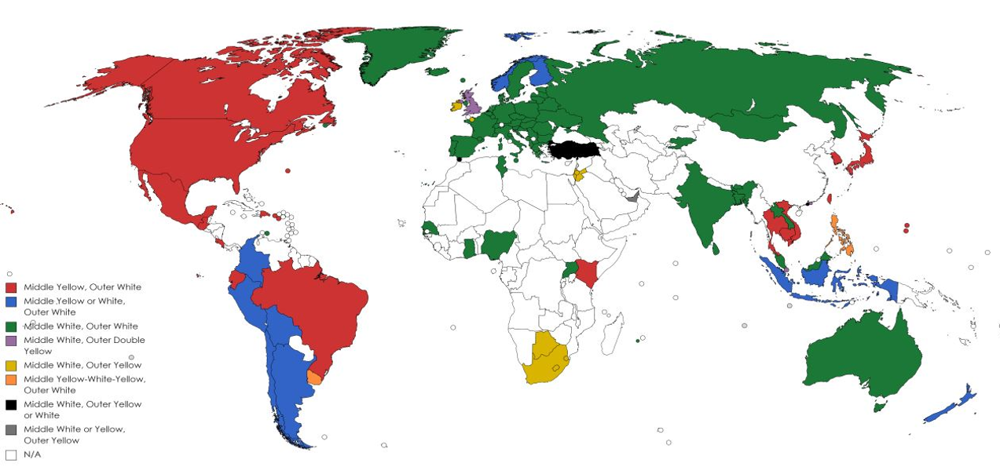
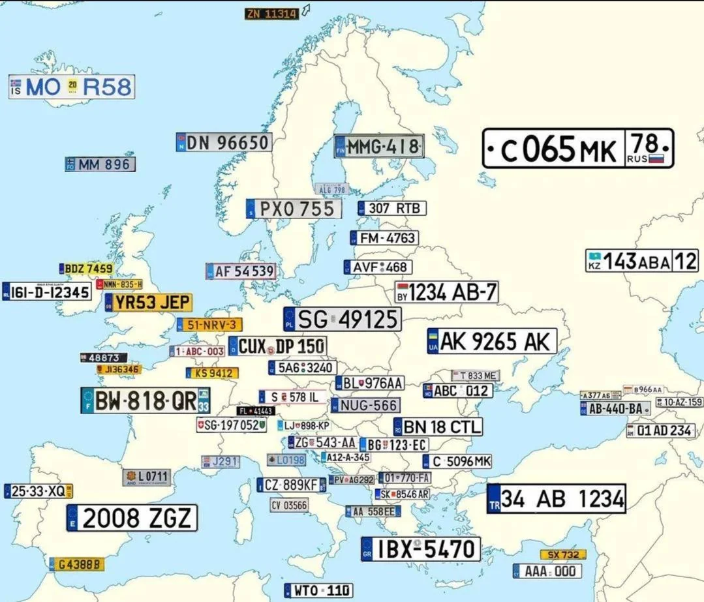
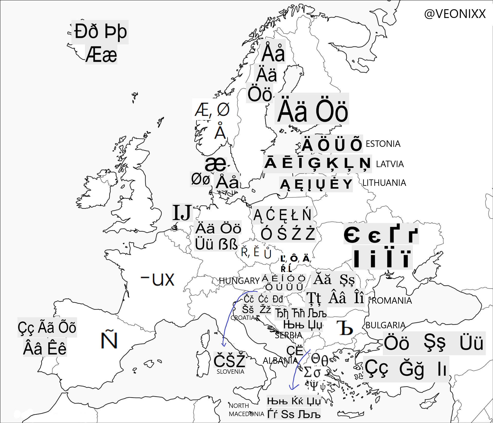
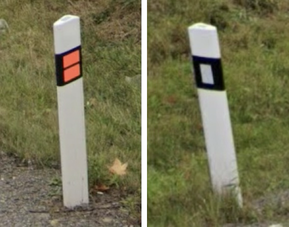

Začátečnické Mety
Tato pravidla nejsou stoprocentní a nefungují vždy dokonale, ale dají ti jako začátečníkovi obrovskou výhodu a silný startovní bod při každém hádání.







Praktické ukázky ze hry
Podívej se, jak vypadají mety v reálných lokacích a jak z nich zkušení hráči dedukují správnou zemi.